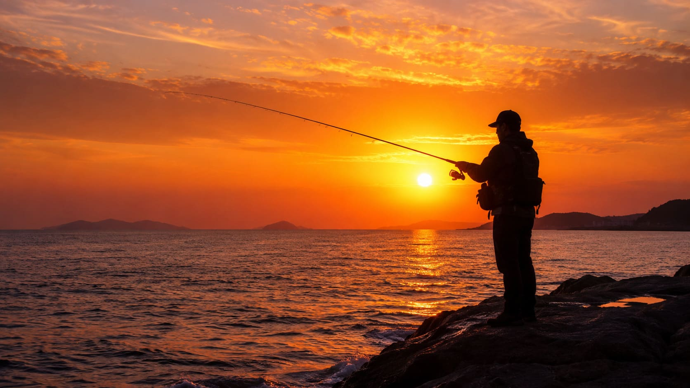

いつ釣りに出掛けるべきか

潮の仕組み（基礎）
海のコンディションを表す「潮の仕組み」。魚のヤル気は、海水の動き、つまり潮の満ち引きと深く関係しています。この潮の状態を知ることが釣果をあげるための第一歩です。
海の水位は、1日のうちに高くなったり低くなったりを繰り返しています。
水位が一番高くなった状態を「満潮（まんちょう）」、水位が一番低くなった状態を「干潮（かんちょう）」と呼びます。
満潮と干潮のピッタリその瞬間は流れが止まり、これを「潮止まり」と呼びます。潮が動かないと魚の警戒心が強くなったり、エサを探すのをやめてしまったりするため、実は一番釣れにくい時間帯になります。
潮が動くと釣れる理由
狙い目は、満潮に向かって水位が上がっている途中や、干潮に向かって下がっている途中の「潮が動いている状態」です。
潮が動くと海中のエサとなるプランクトンや小魚が流され、それを食べる大きな魚たちも一斉に動き出します。
大潮とは何か
この潮の満ち引きの大きさは日によって変わります。
約2週間ほどで満月や新月になる日、満潮と干潮の水位の差がもっとも大きい日を「大潮（おおしお）」と呼びます。
大潮は一番ダイナミックに潮が動くため、海の中が活発になり、一般的に魚がよく釣れる日と言われています。

マづめが最優先な理由
大潮は潮がよく動くからおすすめと説明しましたが、実は大潮だからといって、いつでも必ず釣れるわけではありません。
魚には魚の都合があります。魚の種類ごとに、子孫を残すために体力を蓄えようと爆発的にエサを食べる「産卵期の前後の時期」があったり、快適に動ける「水温の時期」があったりします。そのため、いくら大潮であっても、魚の都合や時期が合わなければ食いついてくれません。
しかし、1日の中で例外的に魚の捕食スイッチが強制的に入る時間があります。それが「朝マづめ」と「夕マづめ」です。
釣りでは、日の出の前後1〜2時間を「朝マづめ」、日の入りの前後1〜2時間を「夕マづめ」と呼びます。この時間帯は、小魚の警戒心が薄れたり、視界が変わることで大きな魚が狩りをしやすくなります。
どれだけ潮の動きが緩やかな日であっても、日の出と日の入りのタイミングは、魚にとって朝ご飯と晩ご飯の絶対的な時間です。
釣りに行くべきタイミング（結論）
潮の種類は海のコンディションですが、マづめは魚の1日のタイムスケジュールです。
そのため、もし釣りに行く日時に迷ったら、まずは潮の種類よりも、日の出や日の入りのタイミングであるマづめに竿を出せるかどうかを最優先に計画を立ててみてください。
これが魚の都合に合わせるための第一歩であり、初心者が一番ハズさない秘訣です。
実践アドバイス
最後に、ベテラン釣り師の視点から見た実践的なアドバイスをひとつ紹介します。
堤防などで朝から釣りをしていると、昼間の釣れない時間帯に心が折れてしまい、夕方のおいしい時間帯を前に帰り支度を始めてしまう初心者の方をよく見かけます。
実はベテランの釣り師たちはその様子を見ています。釣れない間もその場所でエサを撒き続けてくれたおかげで、海の底には魚が集まる準備が整っているからです。
初心者が諦めて帰った直後、その場所を譲り受けて夕マづめのチャンスだけを効率よくモノにする。これは釣り場ではよくある光景です。
どんなに昼間に魚の気配がなくても、それは魚がまだお休みモードなだけかもしれません。自分が撒いたエサを無駄にしないためにも、時間に都合がつく限りは、暗くなるまでじっと粘って竿を出しておくこともおすすめです。